Biogeobatteries
Minerals that store and release electrons like a rechargeable battery, and how microbes use them.
We study how bacteria make iron minerals, and how those minerals can recover metals, clean water and store energy.
The Environmental Mineralogy Group is part of the School of Earth Sciences at the University of Bristol. We study natural processes involving iron minerals. Our main focus is how microbes and minerals interact, and how living things make minerals, a process called biomineralisation.
We combine laboratory experiments with advanced spectroscopy and microscopy to reveal how bacteria produce minerals. We also explore how these biogenic (microbe-made) minerals can be used for metal recovery, cleaning up water and low-cost energy applications.
Minerals that store and release electrons like a rechargeable battery, and how microbes use them.
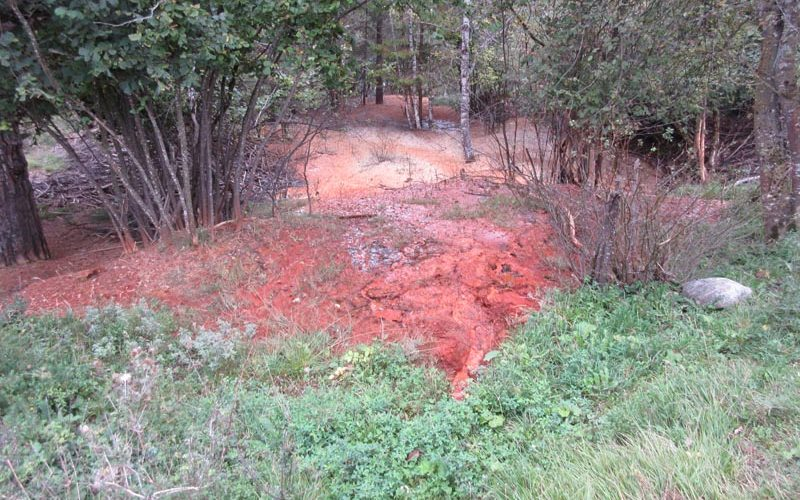
Using iron minerals, made with and without microbes, to capture critical metals and toxic contaminants.
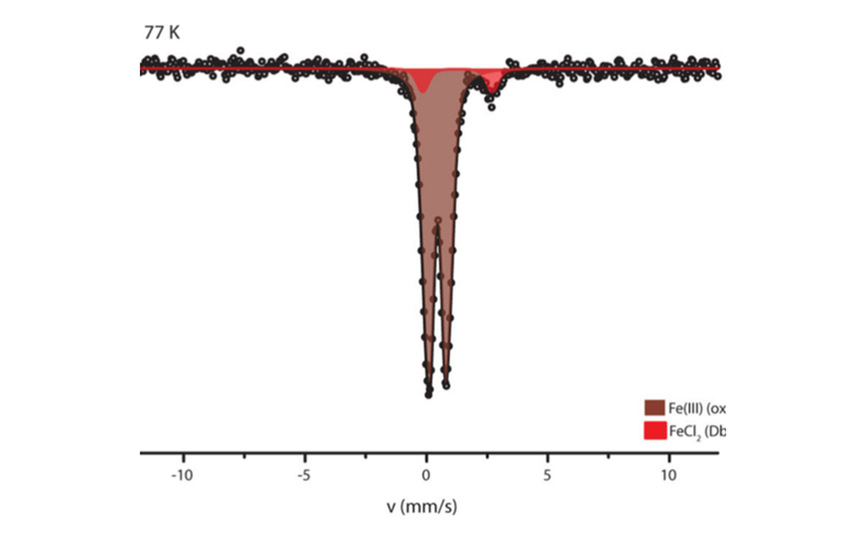
New ways to analyse Mössbauer data, through our web-based platform MinSight.
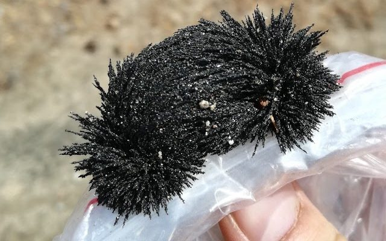
How magnetite made by bacteria in soils and sediments can record past rainfall.
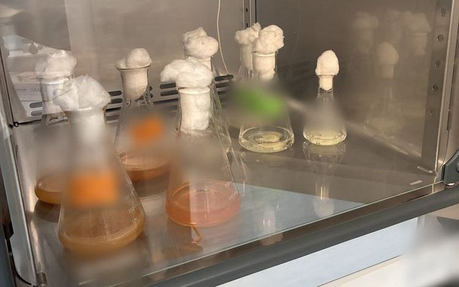
Acid-loving bacteria that recover valuable metals from old electronics. Part of BioXtract.
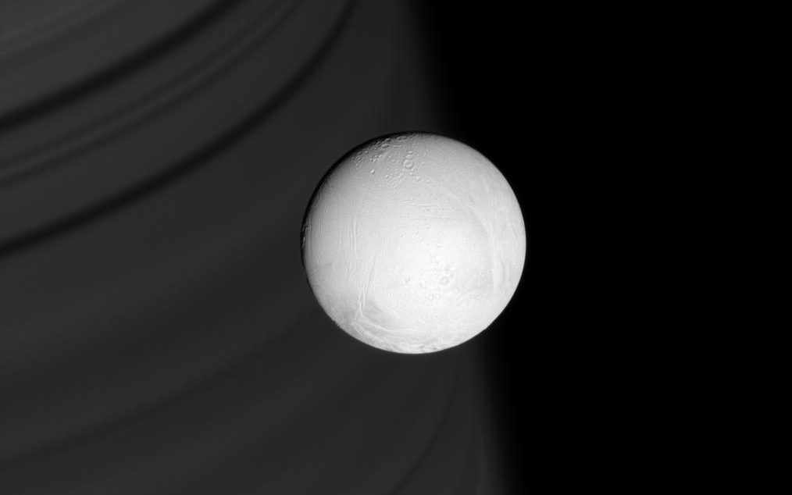
Iron redox chemistry in extreme environments, from Earth's early oceans to the ocean of Saturn's moon Enceladus.
We provide 57Fe Mössbauer, UV-Vis and FTIR spectroscopy for industrial and academic partners as well as for our own research. Our instruments in the School of Earth Sciences are set up for iron-bearing samples. They are used to determine iron oxidation state, identify mineral phases and follow reactions as they happen.
Fe(II) and Fe(III) proportions, iron mineral phases and their relative abundances, measured from 4.2 to 295 K.
Fe(II), total iron, optical density of microbial cultures and other analytes, in 96-well plates or cuvettes.
In situ ATR measurements of reactions between solid precipitates and different reagents.
Loading group members…
An interactive page about colourful and magnetic iron minerals and the tiny bacteria that make them. Go magnet fishing and test yourself with a quiz.
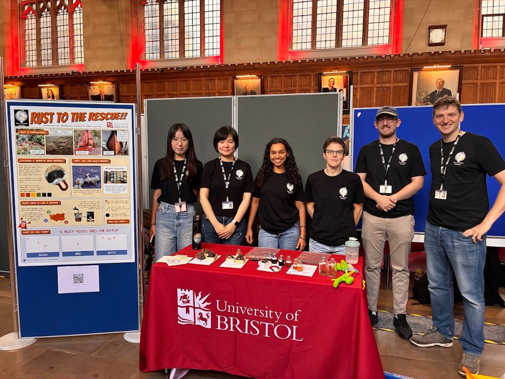
At the 150th anniversary of the University of Bristol, James Byrne, Sara Attfield, Hannah Koepnick, Guanlin Li, Naijin Wu and Emile Brunet from the Environmental Mineralogy Group presented some of their work on rusty iron oxides and how rust might not be as bad as you think! We showed how some iron minerals are magnetic, and also how they can be used to clean up water polluted with heavy metals.
In case you have a developing sense of FOMO, don't worry, as you can learn and play along with our interactive website, Rust to the Rescue! See if you can score a perfect 10/10 on the quiz at the end!
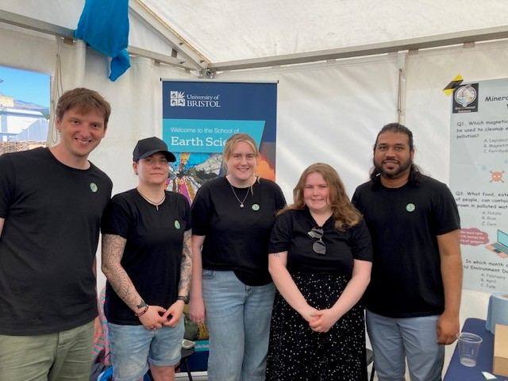
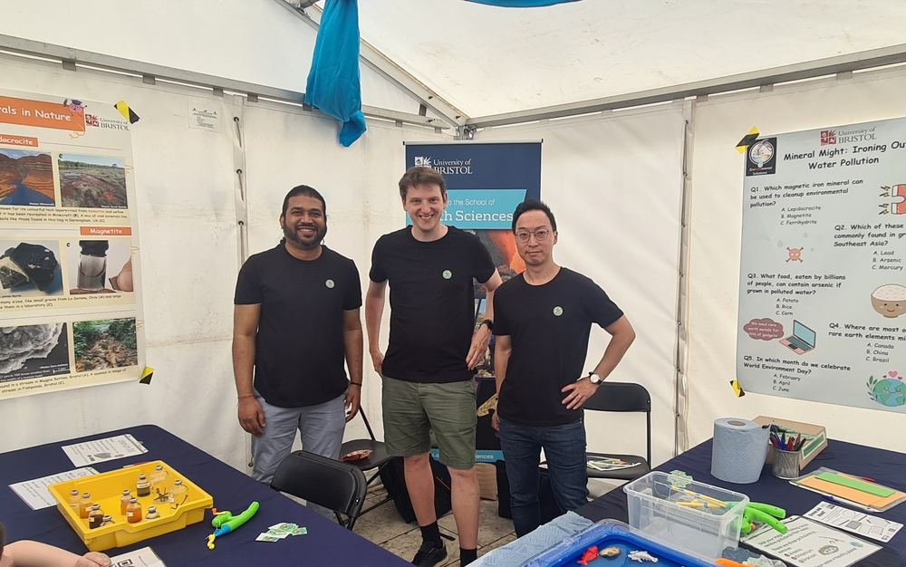
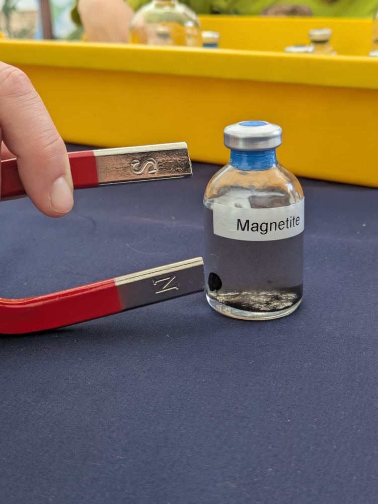
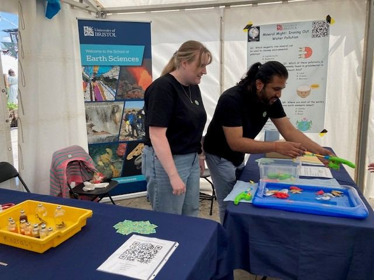
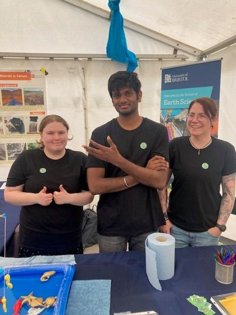
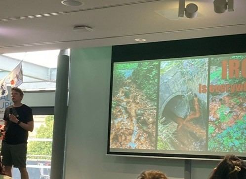
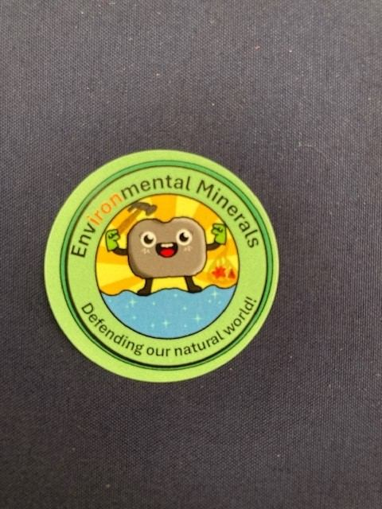
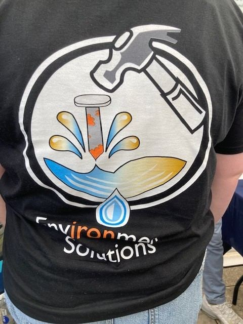
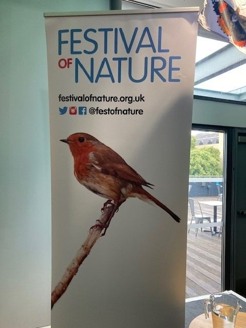
The Festival of Nature is the UK's largest free celebration of the natural world. It is run by the Natural History Consortium every June across Bristol and Bath. In June 2025 we ran a stand where visitors could explore magnetic iron minerals and how they can help clean up polluted water.
James also gave a talk on the importance of iron as part of the festival's "In a Nutshell" presentations.
As a former committee member of the Environmental Mineralogy Group of the Mineralogical Society, James created a video highlighting the properties of his favourite mineral, magnetite. You can view the full entry on the EMG Competition page.
We do not currently have any open funded positions.
However, if you are interested in applying for fellowship schemes, exploring funding opportunities, or discussing potential collaborations, please get in touch.
Our research is funded mainly through a UKRI Future Leaders Fellowship. It has also been supported by BBSRC, SPRIN-D, Ofwat, the National Institutes of Health and the University of Bristol.